Concerte și recitaluri
Fiecare concert a fost o cărămidă. Seară de seară, Aurelian Epuraș, inițiatorul Fabricii de Pian, a construit pianul pentru elevii Secției de Muzică, alături de elevi, profesori, artiști invitați și publicul Văii Jiului. Aici sunt toate, de la inaugurare încoace.
2022
- 20 decembrie
Concert caritabil „În așteptarea lui Moș Crăciun”
Biserica Romano-Catolică „Sf. Varvara”, PetroșaniTinerii pianiști și soliști ai Secției de Muzică, cu piese clasice și colinde. Donațiile au mers către proiectele asociației.
- 2 iunie
Concert Corala Coralis
Biserica Romano-Catolică „Sf. Varvara”, PetroșaniCorala Coralis, sub bagheta profesoarei Aida Roșca, deschide seria de concerte pentru strângerea de fonduri pentru Laboratorul de muzică.
- 11 martie
Concert Aurelian Epuraș, cu Delia Stana și Cătălin Stepa
PetroșaniUn nou proiect al Fabricii de Pian, pornit cu o seară de muzică alături de Aztek Caffe și Lions Club Petroșani „Via Regis”.
- 8 martie
Recital online „Make Music Not War”
OnlineUn manifest împotriva războiului din Ucraina, cântat de 22 de elevi din clasele I–VIII. Profesori îndrumători: Adina Stan, Camelia Ilina, Eliza Gheju, Matilde Stoica și Aurelian Epuraș.
2021
- 7 august
„Pianul de sub stele”
Lacul ȘureanuConcert Aurelian Epuraș sub cerul liber, organizat de Fabrica de Pian împreună cu Lions Club Petroșani „Via Regis”, Teatrul Dramatic „Ion D. Sîrbu”, CAR Parângul IFN Petroșani, Ziarul Exclusiv și Aztek Caffe.
- mai
Recital „Flori de Mai”
Petroșani · înregistrat pentru YouTubeElevii profesorilor Camelia Ilina, Adina Stan și Aurelian Epuraș, pe pianul de concert: de la Bach, Chopin și Grieg la Enescu, Debussy și Liszt.
2020
- 14 februarie
Concert de Valentine’s
Aztek Caffe, PetroșaniCarmen Macavei, Aurelian Epuraș și Claudia Șponor, într-o seară de love songs.
- 24 ianuarie
Un an de Fabrica de Pian
Foaierul Teatrului Dramatic „Ion D. Sîrbu”, PetroșaniAniversarea primului an, între prieteni. Două treimi din suma pentru pianul de concert erau deja strânse, iar susținătorii proiectului au devenit membri de onoare ai asociației.
2019
- 13 decembrie
Concert „Clara Schumann 200”
Sala de Marmură a Primăriei PetroșaniRecitalul membrilor juriului, Manuela Giosa, Corina Răducanu și Eugen Dumitrescu, la pian la patru mâini, cu lucrări de Clara și Robert Schumann. Deschide a VIII-a ediție a Festivalului-Concurs Klavier Art.
- decembrie
Festivalul-Concurs Klavier Art, ediția a VIII-a
Sala de Marmură a Primăriei PetroșaniFestivalul inițiat la Petroșani în 2012, susținut de Fabrica de Pian cu concerte caritabile.
- 3 decembrie
Concert „Fabrica de Pian”
Muzeul Civilizației Dacice și Romane, DevaConcert caritabil al elevilor Secției de Muzică, organizat împreună cu Episcopia Devei și Hunedoarei. O bucată însemnată din pianul mult dorit a fost asigurată în această seară.
- 13 noiembrie
„Povești de toamnă”
Sala de Marmură a Primăriei PetroșaniRecitalul lui Aurelian Epuraș: piese din repertoriul internațional, muzică de film, jazz și compoziții proprii. Fondurile au mers către Festivalul-Concurs Klavier Art.
- 16 octombrie
„Fabrica de Pian” la Lupeni
Palatul Cultural „Minerul”, LupeniDelia Stana, elevă a Secției de Muzică, alături de cantautorii folk Claudia Șponor, Carmen Macavei și Cătălin Stepa și de pianistul Aurelian Epuraș. Organizat cu Lions Club Petroșani „Via Regis” și Primăria Lupeni.
- 20 septembrie
Recital de orgă: Remus Henning
Biserica Romano-Catolică „Sf. Varvara”, PetroșaniRecital extraordinar al organistului Remus Henning, organizat de Comanderia nr. 32 Matei Corvin Petroșani pentru Fabrica de Pian.
- 23 august
Concert „Silvestri 50”
Foaierul Teatrului Dramatic „Ion D. Sîrbu”, PetroșaniDuo-ul pianistic Corina Răducanu și Eugen Dumitrescu, într-un omagiu adus dirijorului, compozitorului și pianistului Constantin Silvestri.
- 17 iulie
Concert Cătălin Stepa
PetroșaniFolk și pian, alături de Cătălin Stepa și Claudia Șponor, pentru Fabrica de Pian.
- 13 iunie
„Histoires d’Amour”
Teatrul Dramatic „Ion D. Sîrbu”, PetroșaniRecitalul lui Aurelian Epuraș, cu scenografia lui Marius Niculescu și fotografiile lui Cristian Preda.
- 6 iunie
„Armonii de vară”
Biserica Evanghelică, Petroșani22 de tineri muzicieni din clasele I–VIII, pentru pianul de concert și cinci pianine de studiu noi.
- 31 mai
„Fleurs de Printemps”
Teatrul Dramatic „Ion D. Sîrbu”, PetroșaniMihaela Manciu (flaut) și Alexandra Glogojan (pian), profesoare la Liceul de Muzică din Brașov. Alexandra este fostă elevă a Secției de Muzică din Petroșani. La bis, Radu Torok a cântat Toccata de George Enescu.
- 3 aprilie
„Fabrica de Sunete”
Sala de Marmură a Primăriei Petroșani30 de pianiști din clasele I–VIII și aproape două sute de spectatori: un concert caritabil cu sala plină.
- 22 martie
Fabrica de Pian la Erasmus+
Belle Epoque, PetroșaniElevii Secției de Muzică au încheiat a doua zi a mobilității Erasmus+ a școlii cu un regal muzical.
- 23 februarie
Zilele Aztek Art
Aztek Caffe, PetroșaniProiectul povestit prin sunete și poezie: un concert de pian susținut de Aurelian Epuraș și o surpriză poetică oferită de Mariana Ghicioi.
- 19 februarie
Ziua Constantin Brâncuși
Centrul Social Educativ „Sf. Ecaterina”, PetroșaniDelia Stana și Radu Torok, elevi ai Secției de Muzică, cântă la 143 de ani de la nașterea marelui sculptor.
- 25 ianuarie
Inaugurarea Fabricii de Pian
Teatrul Dramatic „Ion D. Sîrbu”, PetroșaniSeara în care a început totul: proiectul prezentat comunității, cu muzică, emoții și primii ambasadori.
2018
- 14–16 decembrie
Festivalul-Concurs Klavier Art, ediția a VII-a
PetroșaniFestivalul inițiat la Petroșani în 2012, cu elevi talentați din mai multe școli de muzică din județ și din țară. O lună mai târziu pornea Fabrica de Pian.
Cincisprezece afișe, o singură poveste.
Afișele serilor în care Valea Jiului a construit un pian, apoi o sală, un studio și un laborator. Apasă pe un afiș ca să-l vezi mare.
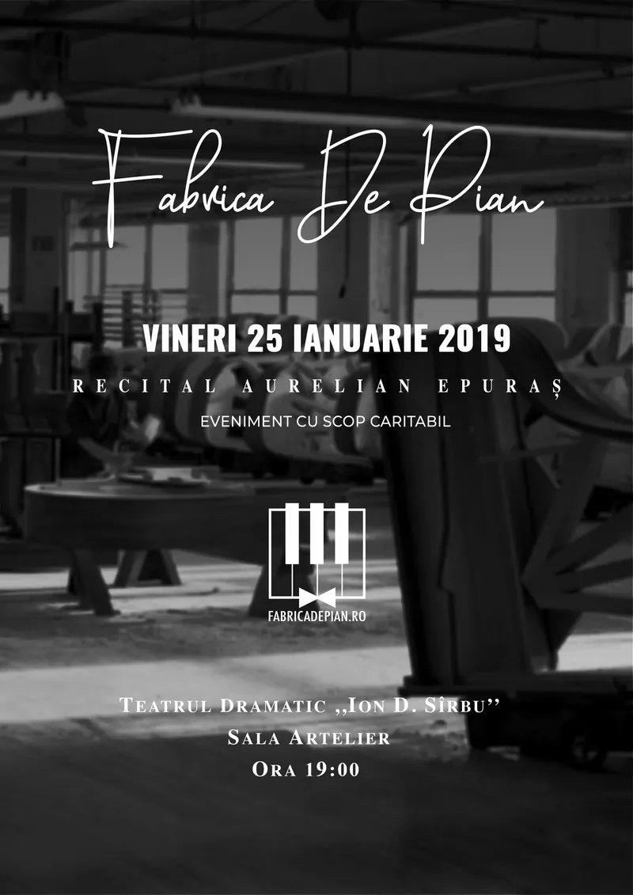
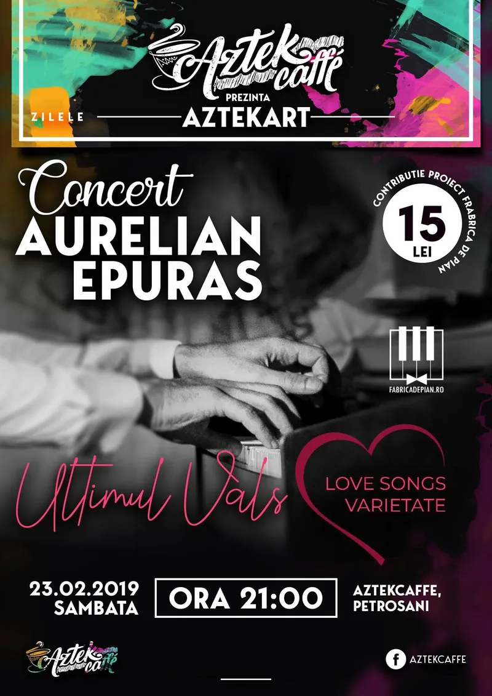
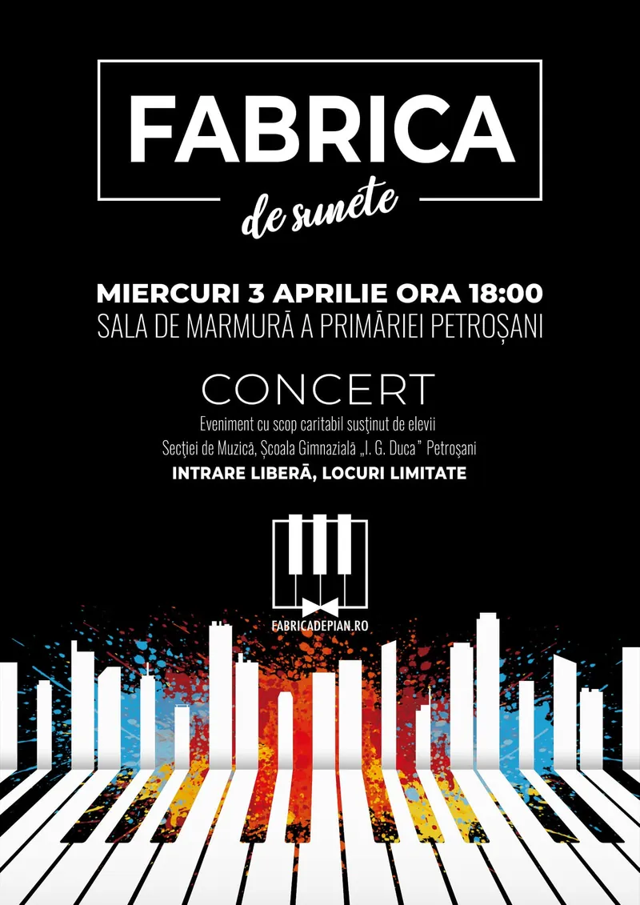
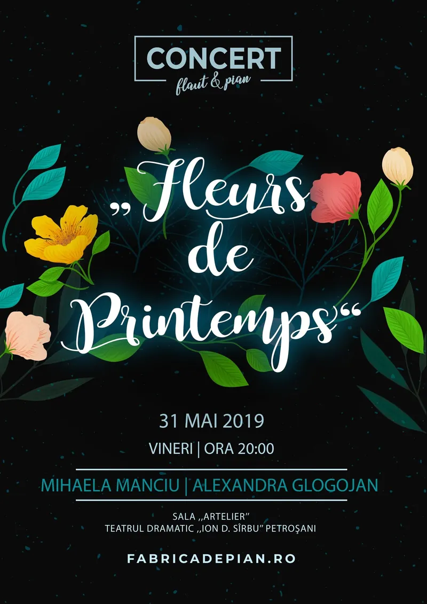
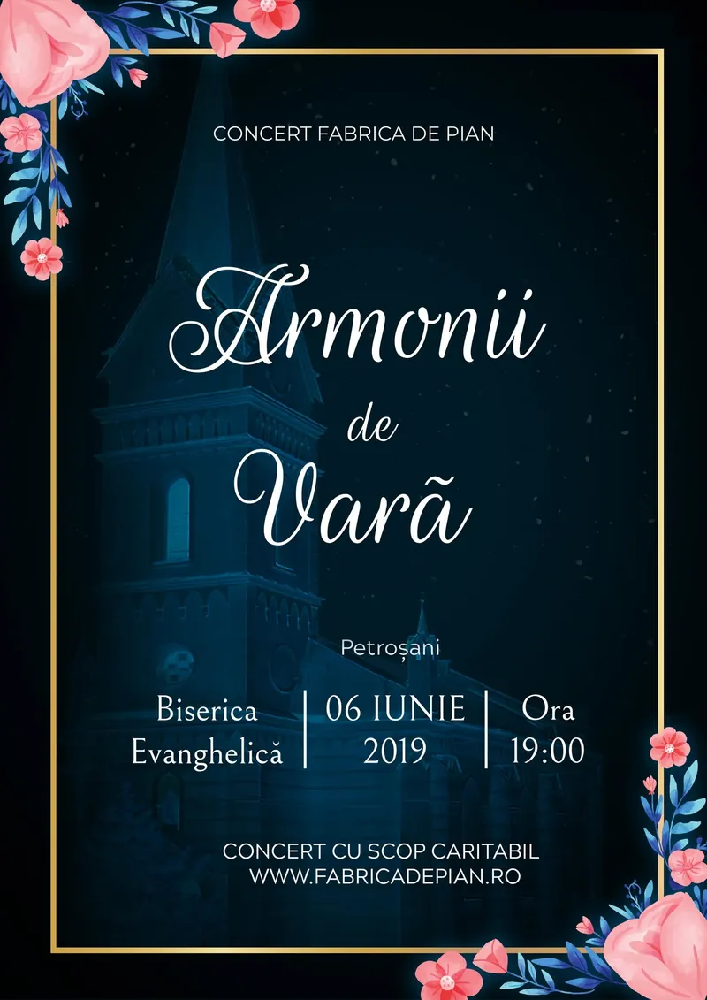
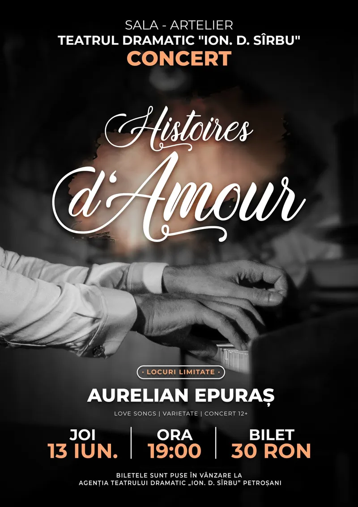
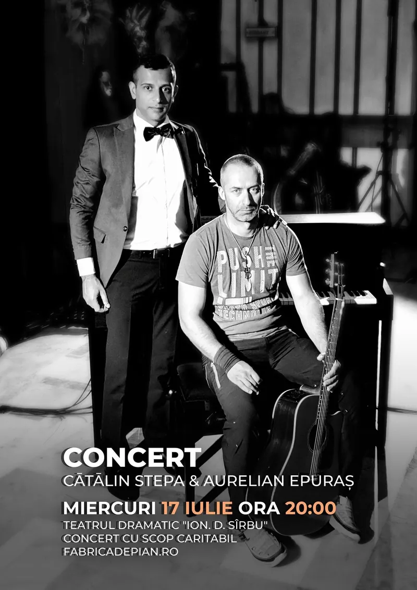
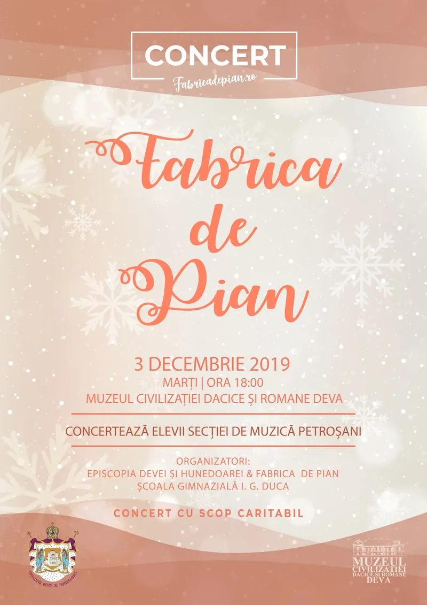
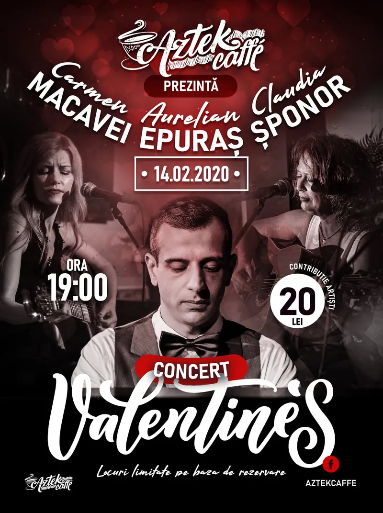
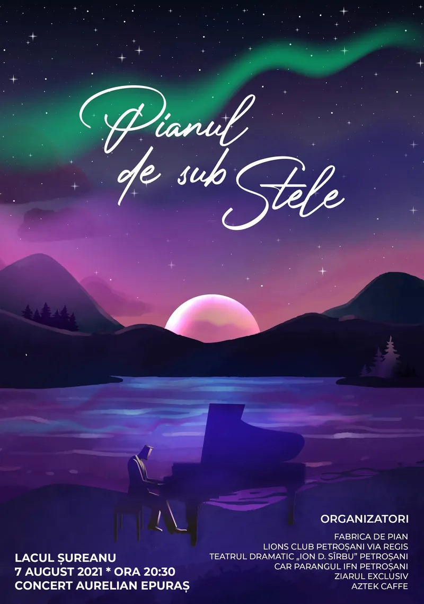
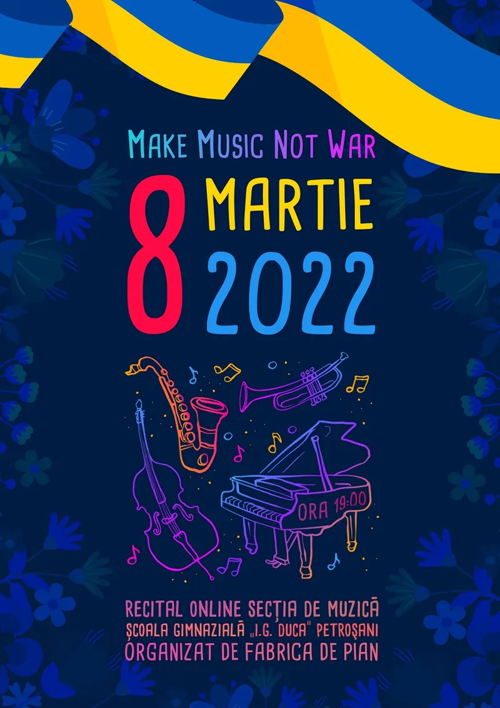
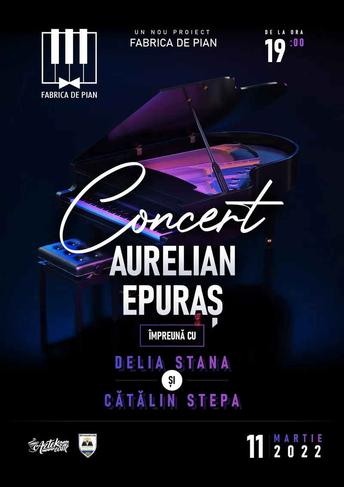
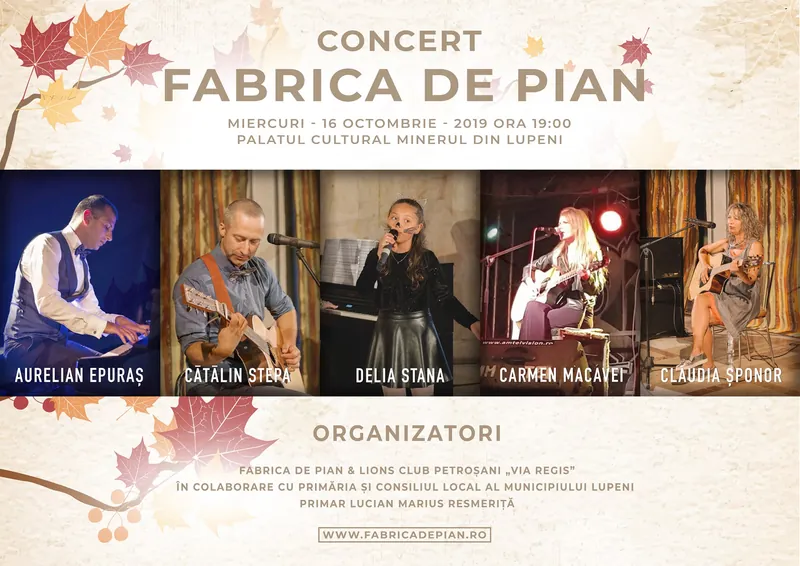
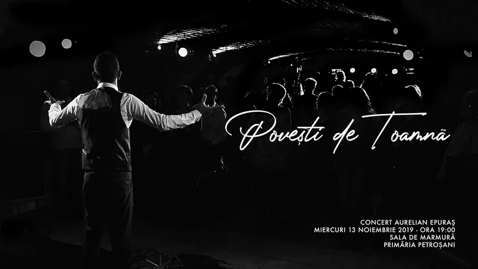
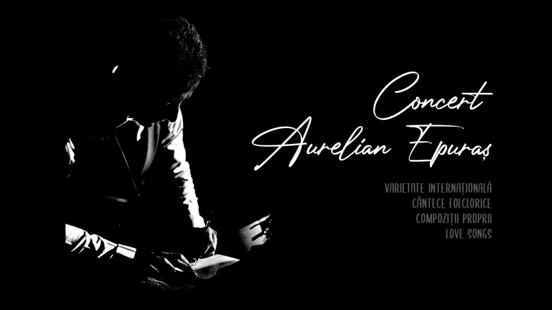